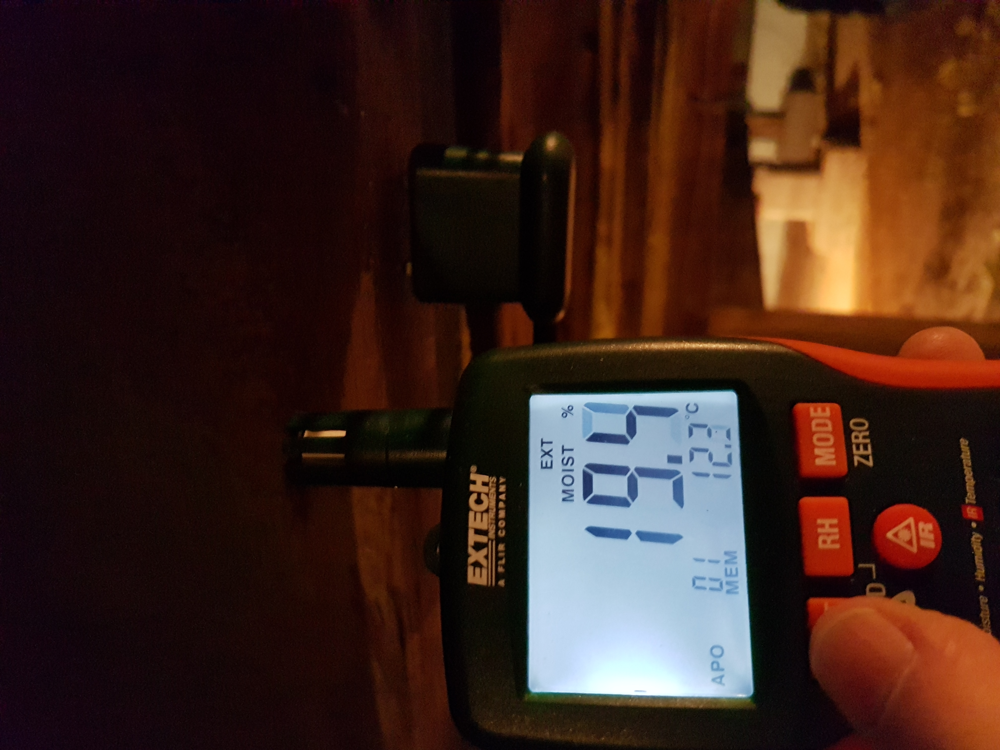
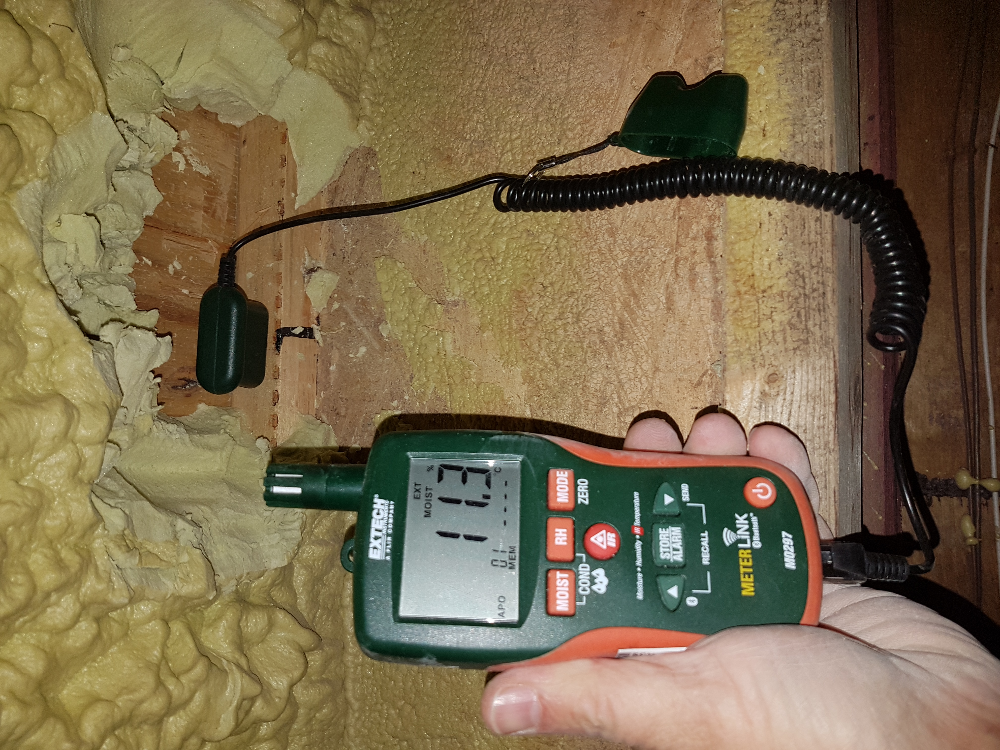
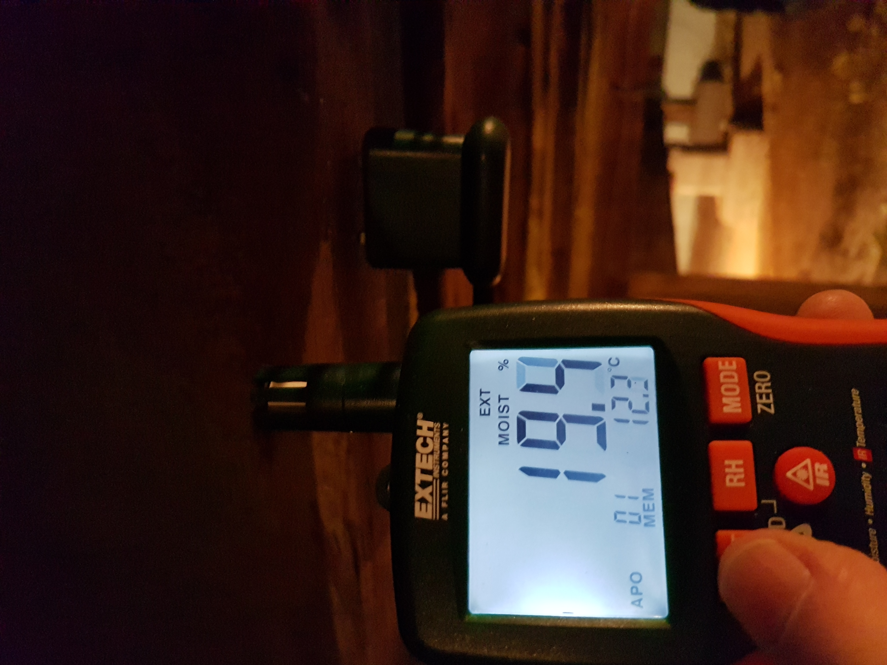
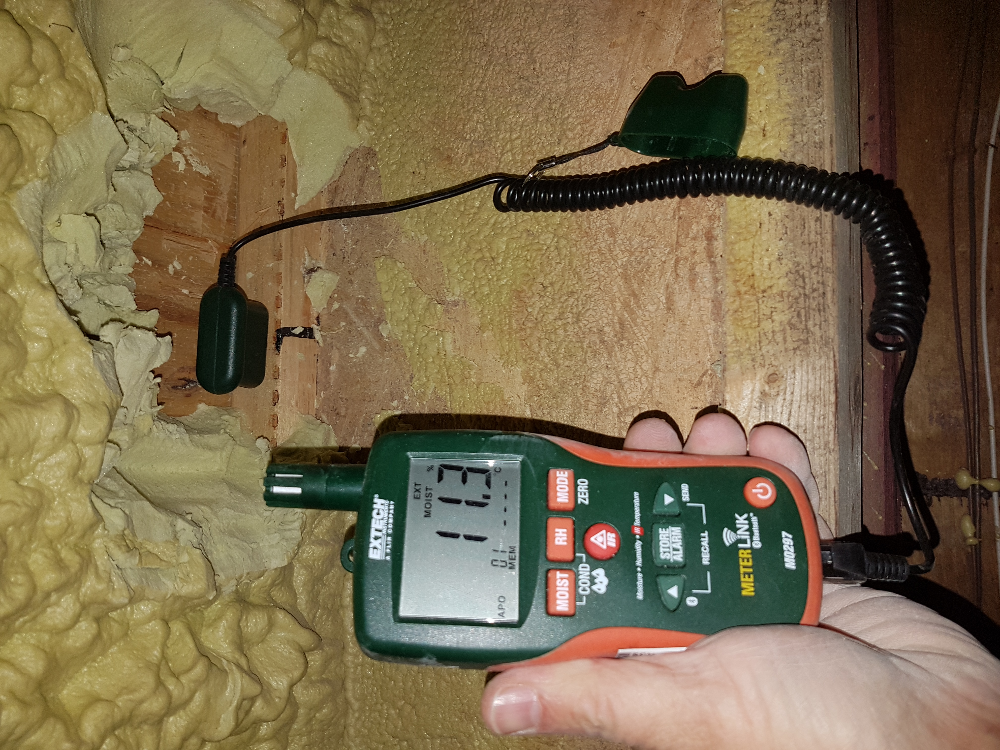

Our Work & Case Studies
Real-world solutions to complex building science problems across Ontario
Expert Building Science Consulting
For over 20 years, PCT Building Science Inc. (incorporated in 2015) has been helping solve problems with buildings across Toronto, the GTA, and Ontario. We help our clients with a comprehensive range of services including:
- Forensic investigations of building failures
- Design reviews for energy efficiency, durability and occupant comfort
- Advice and guidance on building retrofits
- Expert witness testimony in litigation
- Solving building deficiency issues with suppliers and trades
- Moisture and vapour barrier investigations
We are a small, specialized company operating out of the GTA across all of Ontario, working with clients from individual homeowners to large companies with commercial and multi-unit residential buildings. We are the consultants often hired by other consultants to solve difficult cases.
Areas of Specialized Expertise
- Water Leak Investigation - Advanced diagnostic techniques for identifying and resolving water intrusion issues
- Wood and Other Flooring Failures - Moisture-related damage analysis and remediation strategies
- Complex Moisture Issues - Building envelope and interior moisture problem solving
- Basement and Crawlspace Issues - Moisture control, vapour barriers, and structural concerns
- Cladding/Siding Failures - Building envelope integrity assessment and repair recommendations
- Condensation Issues - Thermal bridging analysis and dew point calculations
- Infrared Heat Loss/Gain Investigations - Thermal imaging diagnostics for energy efficiency
- Mould and Decay Investigations - Identification, source determination, and remediation planning
Case Study: Muskoka Crawlspace Moisture Caused Structural Failure
Problem: Structural failure in a Muskoka cottage within 18 months of insulation installation
This crawlspace in Muskoka was insulated with closed cell spray foam applied to the underside of the subfloor and onto the top halves of the structural wood composite I-joists in an attempt to improve the comfort and energy efficiency of the building.
Within 18 months, the structural I-joists and the rest of the structural wood supporting the building began to rot, resulting in major structural damage and an expensive repair. This case demonstrates the critical importance of proper vapour barrier installation and moisture control in building envelope design.
Solution: PCT Building Science conducted a thorough moisture investigation, identified the source of moisture accumulation, and provided comprehensive remediation recommendations including proper vapour barrier installation and ventilation strategies.


 




Case Study: New Basement Moisture and Mould Investigation
Problem: Moisture and mould appearing in basement walls of newly constructed home shortly after occupancy
In this newly constructed home in the GTA, moisture and mould appeared in the walls of the basement shortly after occupancy. The homeowners were concerned about air quality, structural integrity, and the long-term durability of their new investment.
Solution: PCT Building Science Inc. was contracted to determine the source and cause of the moisture intrusion. Our investigation included:
- Comprehensive moisture testing and mapping
- Thermal imaging to identify vapour barrier deficiencies
- Building envelope assessment
- Detailed remediation recommendations
- Prevention strategies to avoid future problems
Experiencing Building Problems?
Get expert building science consulting from the team that solves the toughest cases in Toronto and the GTA.
Contact Us for a Consultation